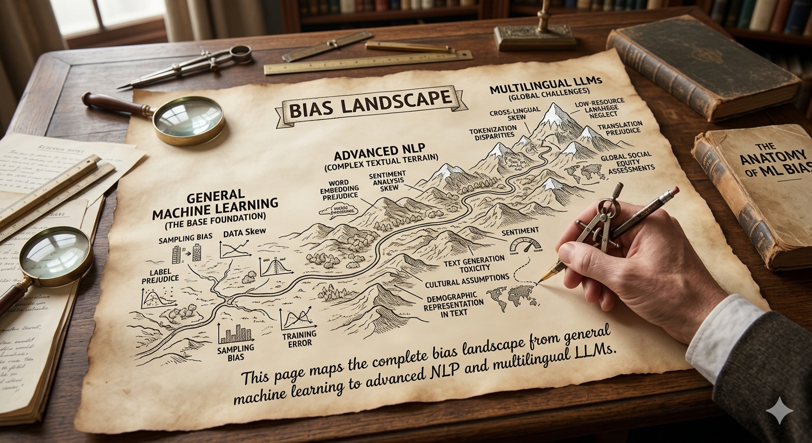
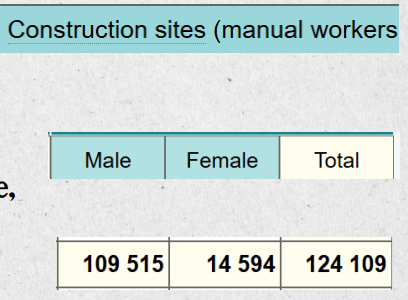

Source of Bias
AI bias is not a glitch; it is the algorithmic reflection of human history. This briefing outlines how societal prejudices are digitized, amplified, and reinforced through the machine learning lifecycle.1. AI as a Societal Mirror
Machine learning bias is not a random error; it is the mathematical projection of human cognitive and societal biases. As Alelyani (2021) explains, models formalize latent social biases into explicit algorithmic logic by internalizing unconscious prejudices from historical data.
Harmful content can be filtered While structural biases still
exist.
Structural Bias: Naturally, data distribution look
like, such as the " male-to-female occupational ratio. "

